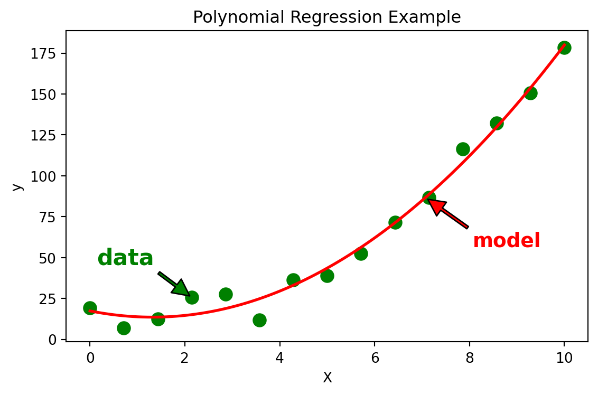
Linear regression
Introduction to Artificial Intelligence and Machine Learning 4
Jiabao Xu
Jiabao.Xu@glasgow.ac.uk
Massimo Vassalli
massimo.vassalli@glasgow.ac.uk
The three elements of the ML method
In Lecture 2a we saw that every machine learning method is made of three elements, \(M=(H,L,A)\):
- model \(H\), the hypothesis space, i.e. the set of functions \(f_\theta : \mathcal{X} \rightarrow \mathcal{Y}\) parametrised by \(\theta\)
- strategy \(L\), a loss/objective function \(L(\theta,\mathcal{D})\) defined on the parameters \(\theta\) and the data \(\mathcal{D}\)
- algorithm \(A\), a procedure to search for the \(\theta^*\) that optimises the objective
Today we build our first method, linear regression, one element at a time: the model, the strategy, the algorithm. Then we apply it to the diabetes dataset explored in Lecture 2a.
Regression
Regression in machine learning is the process of training an algorithm on pairs of labelled input and output data, obtaining an optimal regression hypothesis, and then using it to predict the output for unknown inputs. The output is a continuous value.
Regression is a supervised learning task: the target values are known for a set of training data.
Important
This lecture is based on content from the books Principles of Machine Learning and Machine Learning for Engineers
Regression model
\[ y = f_\theta(\mathbf{x}) + \varepsilon \]
where \(y\) is the dependent variable (target), \(\mathbf{x}\) the independent variables (features), \(\theta\) the parameters, \(\varepsilon\) the error term, and \(f_\theta(\mathbf{x})\) is referred to as the regression function.
Assumptions (of classical linear regression)
- The sample is representative of the population at large.
- The independent variables \(\mathbf{x}\) are measured without error.
- The error \(\varepsilon\) has an expected value of zero, given the independent variables: \(\mathbb{E}[\varepsilon \mid \mathbf{x}] = 0\).
- The variance of the error \(\varepsilon\) is constant across all input data (homoscedasticity).
- The errors \(\varepsilon\) are uncorrelated, i.e. the variance-covariance matrix of the errors is diagonal.
Note
When these assumptions are violated the model can still be fitted, but its predictions and its uncertainty estimates become less reliable. Checking them (e.g. by plotting the residuals) is part of good practice.
Linear regression
The first step in the definition of the ML method is the selection of the model \(H\). For regression tasks with continuous targets and a roughly linear relationship between features and target, linear regression is the natural starting point. For more complex relationships, models like decision trees or support vector machines may be more appropriate (Weeks 6-7).
Univariate linear regression: the input \(x\) is a single number.
\[ y = b + w\, x \]
with parameters \(\boldsymbol{\theta} = [b, w]\): the intercept (or bias) \(b\) and the slope (or weight) \(w\).
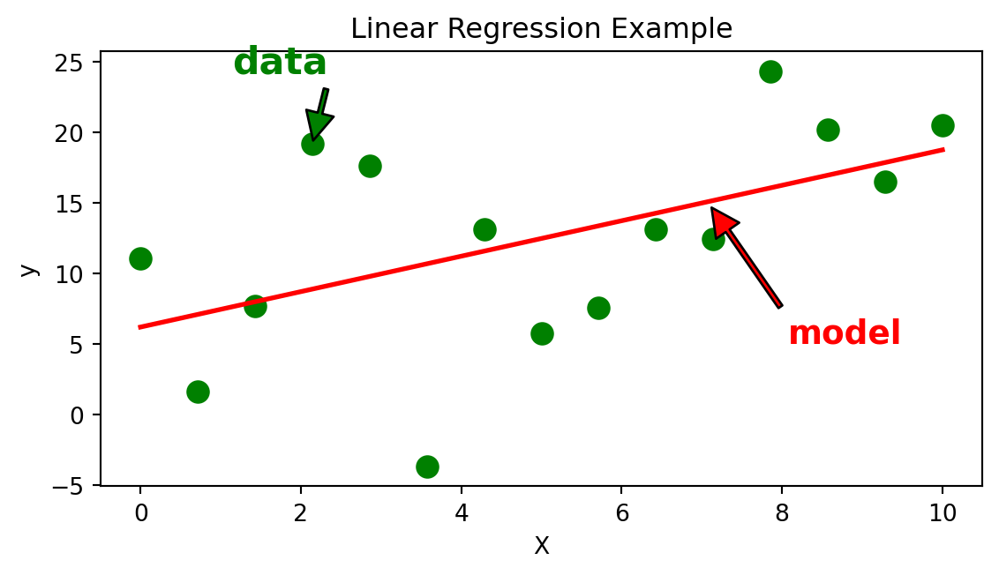
Multivariate linear regression
With \(d\) features, \(\mathbf{x} = [x_1, x_2, \dots, x_d]^T\), the model becomes a hyperplane:
\[ y = b + w_1 x_1 + w_2 x_2 + \dots + w_d x_d = b + \mathbf{w}^T \mathbf{x} \]
For the \(n\) samples of the dataset, \(\hat{y}_i = b + \mathbf{w}^T \mathbf{x}_i\). Adding a column of ones to the data matrix absorbs the intercept into a single parameter vector \(\boldsymbol{\theta} = [b, w_1, \dots, w_d]^T\), and all the predictions can be written in matrix form:
\[ \hat{\mathbf{y}} = \tilde{\mathbf{X}}\boldsymbol{\theta}, \qquad \tilde{\mathbf{X}} = [\mathbf{1} \;\; \mathbf{X}] = \begin{bmatrix} 1 & x_{11} & \cdots & x_{1d} \\ \vdots & \vdots & & \vdots \\ 1 & x_{n1} & \cdots & x_{nd} \end{bmatrix} \in \mathbb{R}^{n \times (d+1)} \]
Note
The model is linear in the parameters \(\theta\), not necessarily in the inputs: using \(x, x^2, x^3\) as features (as in the first plot of this lecture) is still linear regression. We will come back to polynomial features and to the new challenges of multivariate spaces in Lecture 3b.
The strategy
The strategy requires the definition of a loss or objective function, a mathematical expression that quantifies how well the model’s predictions match the observed data.
- model \(H\), hypothesis space, the set of functions \(f_\theta : \mathcal{X} \rightarrow \mathcal{Y}\) parametrised by \(\theta\)
- strategy \(L\), a loss/objective function \(L(\theta,\mathcal{D})\) defined on parameters \(\theta\) and data \(\mathcal{D}\)
For regression tasks, the most common loss function is the mean squared error (MSE):
\[ L(\theta, \mathcal{D}) = \frac{1}{n} \sum_{i=1}^n (y_i - f_\theta(\mathbf{x}_i))^2 \]
where \(y_i\) are the observed target values, \(f_\theta(\mathbf{x}_i)\) are the model predictions for the corresponding \(\mathbf{x}_i\), and \(n\) is the number of samples. Minimising the MSE gives the parameter values \(\theta^*\) that best fit the data according to this criterion.
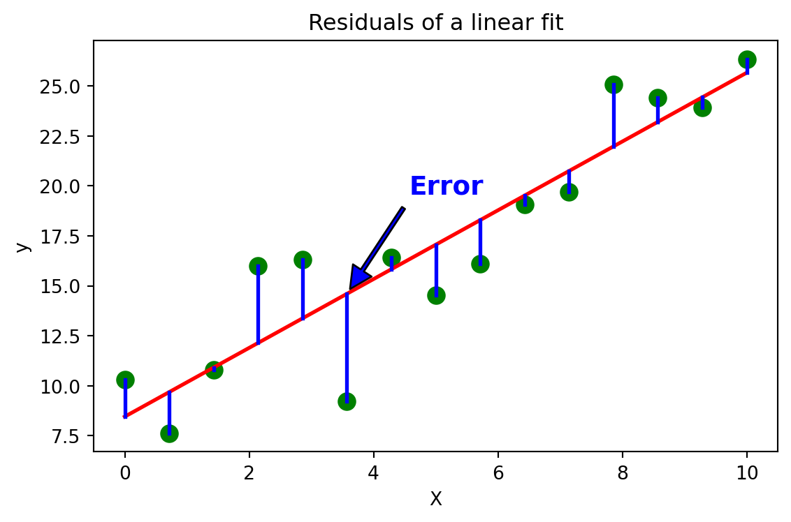
The loss function
For regression models, several loss functions are commonly used:
- Mean Squared Error (MSE): \[ L_{MSE}(\theta, \mathcal{D}) = \frac{1}{n} \sum_{i=1}^n (y_i - f_\theta(\mathbf{x}_i))^2 \] This penalises larger errors more heavily and is sensitive to outliers.
- Mean Absolute Error (MAE): \[ L_{MAE}(\theta, \mathcal{D}) = \frac{1}{n} \sum_{i=1}^n |y_i - f_\theta(\mathbf{x}_i)| \] This treats all errors equally and is more robust to outliers.
- Huber Loss: \[ L_{\delta}(\theta, \mathcal{D}) = \frac{1}{n} \sum_{i=1}^n \begin{cases} \frac{1}{2}(y_i - f_\theta(\mathbf{x}_i))^2 & \text{if } |y_i - f_\theta(\mathbf{x}_i)| \leq \delta \\ \delta \cdot (|y_i - f_\theta(\mathbf{x}_i)| - \frac{1}{2}\delta) & \text{otherwise} \end{cases} \] This combines the advantages of MSE and MAE: quadratic for small errors, linear for large ones.
Choice of loss function
The choice of loss function affects the sensitivity of the model to outliers and the optimisation process.
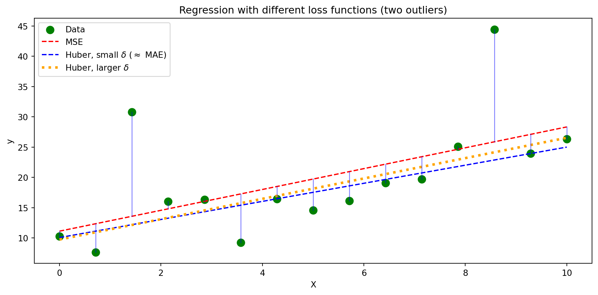
Note
The choice of loss also has a statistical meaning: minimising the MSE is equivalent to assuming Gaussian noise \(\varepsilon\) (maximum likelihood), while minimising the MAE corresponds to assuming noise with heavier tails (Laplace). Choosing the loss means making an assumption about the data.
The algorithm
The third component of a machine learning method is the algorithm \(A\), the procedure used to search for the optimal parameters \(\theta^*\) that minimise the chosen loss function \(L(\theta, \mathcal{D})\).
- model \(H\), hypothesis space, the set of functions \(f_\theta : \mathcal{X} \rightarrow \mathcal{Y}\) parametrised by \(\theta\)
- strategy \(L\), a loss/objective function \(L(\theta,\mathcal{D})\) defined on parameters \(\theta\) and data \(\mathcal{D}\)
- algorithm \(A\), a procedure to search for \(\theta^*\) that optimises the objective.
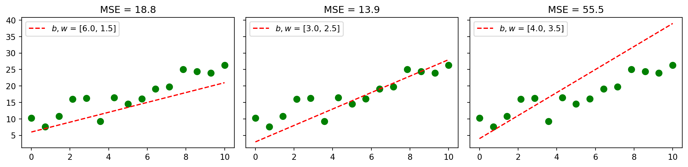
Which pair of parameters is best? And how do we find it without trying them all?
Searching for the minimum
For linear regression with the MSE, the loss is a convex function of the parameters (a parabola in 1D, a bowl in higher dimensions): there is a single, global minimum. For more complex models or losses, the landscape can have many local minima.
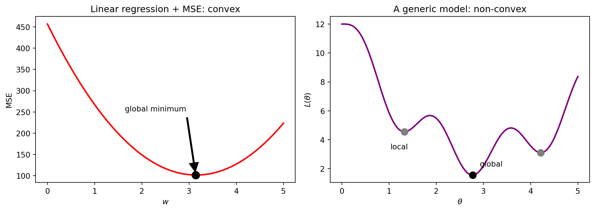
The analytical solution: least squares
For linear regression with MSE, the minimum can be found analytically. Setting the gradient of the loss to zero:
\[ \nabla_{\boldsymbol{\theta}} L = -\frac{2}{n}\tilde{\mathbf{X}}^T(\mathbf{y} - \tilde{\mathbf{X}}\boldsymbol{\theta}) = \mathbf{0} \quad\Longrightarrow\quad \boldsymbol{\theta}^* = (\tilde{\mathbf{X}}^T\tilde{\mathbf{X}})^{-1}\tilde{\mathbf{X}}^T\mathbf{y} \]
These are the normal equations of ordinary least squares (OLS).
normal equations: [17.706 1.373]
scikit-learn: [17.706 1.373]Note
The gradient follows from the rules of the linear algebra recap (2a). The closed form is exact and fast for a moderate number of features, but it requires the \((d+1)\times(d+1)\) matrix \(\tilde{\mathbf{X}}^T\tilde{\mathbf{X}}\) to be invertible: strongly correlated features make it (nearly) singular (Lecture 4a). And it only exists for this specific combination of model and loss. For everything else, we need an iterative algorithm.
Iterative optimisation
Numerical optimisation: set \(\theta\) \(\longrightarrow\) calculate \(L\) \(\longrightarrow\) update \(\theta\) \(\longrightarrow\) repeat.
But how do we update the parameters \(\theta\) to efficiently search for the (absolute) minimum?
Gradient descent
Imagine playing a game in which the players are at the top of a mountain and are asked to reach the lowest point. Additionally, they are blindfolded. Which strategy would take you down to the lake? source: Medium
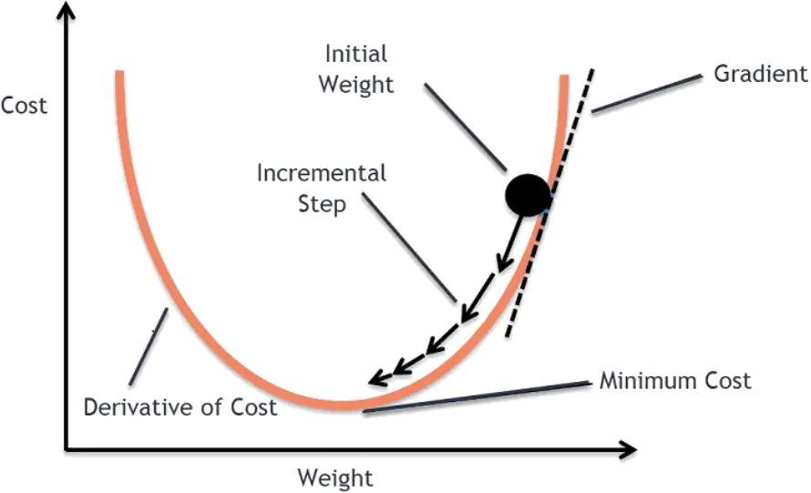
Gradient descent computes the local gradient \(\frac{\partial L}{\partial \theta}\) of the loss function \(L\) and takes a step in the negative gradient direction, with a size proportional to the magnitude of the gradient through a learning rate \(\eta\):
\[ \theta_{\text{new}} = \theta_{\text{old}} - \eta \frac{\partial L}{\partial \theta} \]
Gradient descent for linear regression
For the univariate model \(\hat{y}_i = b + w x_i\) with MSE loss, the gradients are:
\[ \frac{\partial L}{\partial b} = -\frac{2}{n}\sum_{i=1}^n (y_i - \hat{y}_i) \qquad \frac{\partial L}{\partial w} = -\frac{2}{n}\sum_{i=1}^n (y_i - \hat{y}_i)\,x_i \]
and the algorithm is simply:
- initialise \(b, w\) (e.g. at zero)
- compute the predictions \(\hat{y}_i\) and the gradients
- update \(b \leftarrow b - \eta\,\partial L/\partial b\) and \(w \leftarrow w - \eta\,\partial L/\partial w\)
- repeat until the loss stops decreasing
In matrix form, for any number of features: \(\boldsymbol{\theta} \leftarrow \boldsymbol{\theta} + \eta\,\frac{2}{n}\tilde{\mathbf{X}}^T(\mathbf{y} - \tilde{\mathbf{X}}\boldsymbol{\theta})\)
The learning rate
The learning rate \(\eta\) is the most important setting of gradient descent. It is not learned from the data: it is a hyperparameter (Lecture 5a).
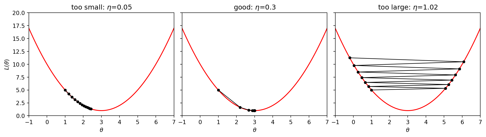
Too small: slow convergence. Too large: the updates overshoot and diverge.
Variants of gradient descent
- Batch gradient descent uses all the training samples to compute each update: accurate but slow for large datasets.
- Stochastic gradient descent (SGD) uses one random sample per update: noisy but fast, and the noise can help escape shallow local minima.
- Mini-batch gradient descent uses a small random subset per update: the standard compromise, and the way neural networks are trained (CW3).
Important
Gradient descent is sensitive to the scale of the features: if one feature is 1000 times larger than another, the loss landscape becomes an elongated valley and convergence is very slow. Always standardise the features first (2a, 3b). In scikit-learn: LinearRegression (least squares) vs SGDRegressor (stochastic gradient descent).
Diabetes: a supervised learning task
The diabetes dataset contains the targets, in terms of disease progression, so we can frame the analysis as supervised learning. We select the body mass index, the feature most correlated with the target (Lecture 2a).
from sklearn.datasets import load_diabetes
diabetes = load_diabetes()
X = diabetes.data[:, [2]] # BMI, kept 2D: shape (n, 1)
y = diabetes.target
fig, ax = plt.subplots(figsize=(8, 5))
ax.scatter(X, y, alpha=0.7)
ax.set_xlabel(diabetes.feature_names[2])
ax.set_ylabel('disease progression')
_ = ax.set_title("Diabetes progression vs BMI")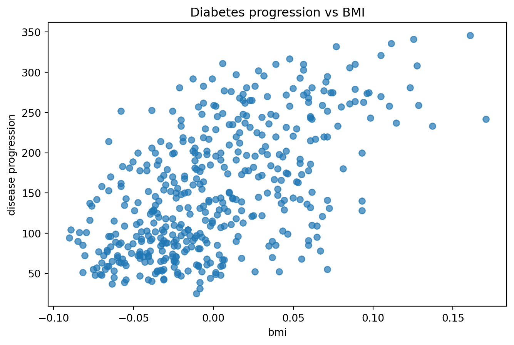
Train, fit, predict
The complete pipeline in a few lines: split the data, fit the model on the training set, and predict on the test set.
from sklearn.model_selection import train_test_split
X_train, X_test, y_train, y_test = train_test_split(
X, y, test_size=0.25, random_state=0)
model = LinearRegression()
model.fit(X_train, y_train)
print(f"b = {model.intercept_:.1f}, w = {model.coef_[0]:.1f}")
xx = np.linspace(X.min(), X.max(), 100).reshape(-1, 1)
fig, ax = plt.subplots(figsize=(6, 4))
ax.scatter(X_train, y_train, alpha=0.4, label='train')
ax.scatter(X_test, y_test, alpha=0.8, label='test')
ax.plot(xx, model.predict(xx), 'r', linewidth=2, label='model')
ax.set_xlabel('bmi')
ax.set_ylabel('disease progression')
_ = ax.legend()b = 153.2, w = 1016.9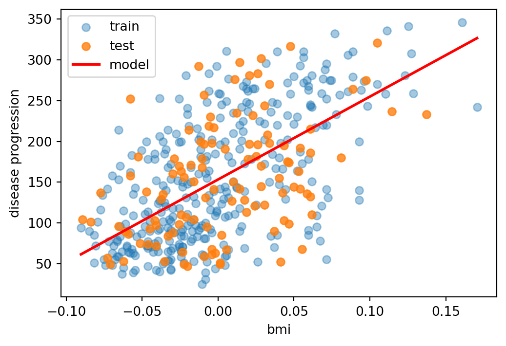
How good is the model?
We evaluate the model on the test set with three numbers:
- the loss itself, \(\text{MSE} = \frac{1}{n}\sum_{i=1}^{n}(y_i - \hat{y}_i)^2\)
- the root mean squared error, \(\text{RMSE} = \sqrt{\text{MSE}}\): a typical prediction error, in the same units as \(y\)
- the coefficient of determination, which compares the model with the trivial prediction \(\hat{y}_i = \bar{y}\) (the mean of the target):
\[ R^2 = 1 - \frac{\sum_{i=1}^{n} (y_i - \hat{y}_i)^2}{\sum_{i=1}^{n} (y_i - \bar{y})^2} \]
\(R^2 = 1\) for perfect predictions, \(R^2 = 0\) for a model no better than the mean, and \(R^2 < 0\) if the model is worse than the mean (possible on the test set). It is the fraction of the variance of \(y\) explained by the model.
train MSE = 3808.2 RMSE = 61.7 R2 = 0.39
test MSE = 4181.4 RMSE = 64.7 R2 = 0.16Note
BMI alone explains only a modest fraction of the variability of disease progression: a simple, interpretable model, but far from a complete one. Note also that train and test scores differ: a single random split gives a noisy estimate of performance (more robust strategies in Lecture 5a). Evaluation metrics are revisited in detail in Lecture 4b.
Checking the residuals
The residuals \(y_i - \hat{y}_i\) are a direct way to check the assumptions of the regression model.
res_train = y_train - model.predict(X_train)
res_test = y_test - model.predict(X_test)
fig, ax = plt.subplots(figsize=(6, 4))
ax.scatter(model.predict(X_train), res_train, alpha=0.4, label="train")
ax.scatter(model.predict(X_test), res_test, alpha=0.8, label="test")
ax.axhline(0, color="k", linewidth=1)
ax.set_xlabel(r"prediction $\hat{y}_i$")
ax.set_ylabel(r"residual $y_i - \hat{y}_i$")
_ = ax.legend()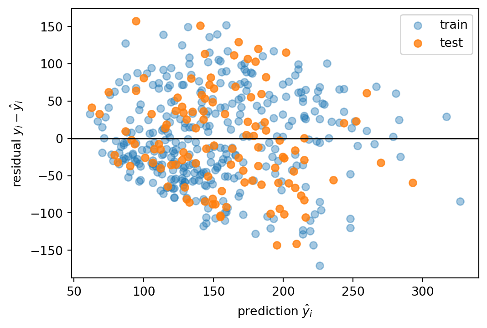
The residuals are centred on zero with no obvious curvature, so a linear model is not unreasonable. But they are large, and their spread tends to grow with the prediction: the error is not constant (heteroscedasticity), and BMI alone leaves most of the variability unexplained.
Gradient descent from scratch
The same problem solved with our own gradient descent. We standardise BMI first, so that a simple learning rate works well.
x = (X_train[:, 0] - X_train.mean()) / X_train.std()
b, w, eta = 0.0, 0.0, 0.1
history = []
for epoch in range(100):
y_hat = b + w * x
r = y_train - y_hat
b += eta * 2 * r.mean()
w += eta * 2 * (r * x).mean()
history.append((r**2).mean())
ref = LinearRegression().fit(x.reshape(-1, 1), y_train)
print(f"GD : b = {b:.2f}, w = {w:.2f}")
print(f"OLS: b = {ref.intercept_:.2f}, w = {ref.coef_[0]:.2f}")GD : b = 151.92, w = 49.45
OLS: b = 151.92, w = 49.45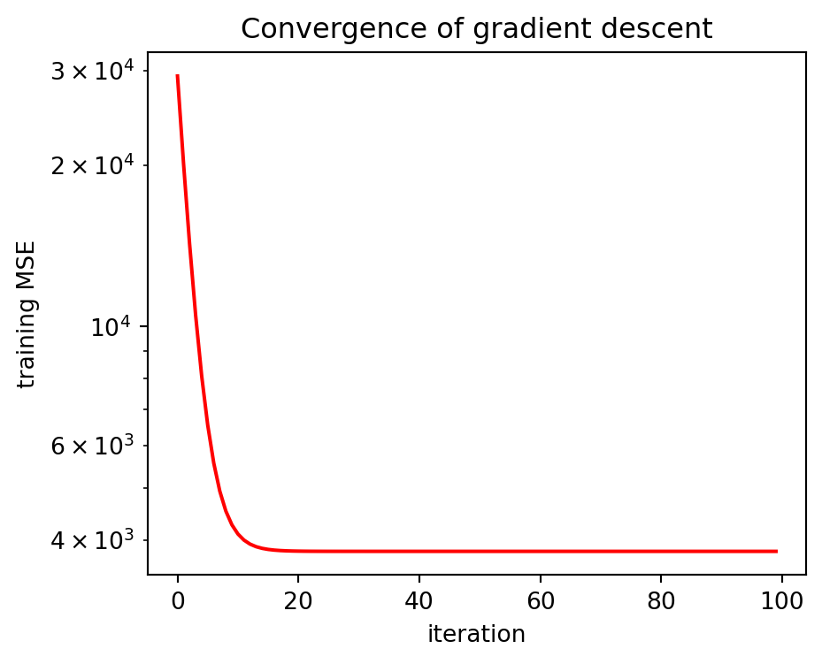
Using all the features
The multivariate model uses the same code: only X changes, from one column to ten.
Xa = diabetes.data # shape (442, 10)
Xa_train, Xa_test, y_train, y_test = train_test_split(
Xa, y, test_size=0.25, random_state=0)
full = LinearRegression().fit(Xa_train, y_train)
for name, Xs, ys in [("train", Xa_train, y_train), ("test", Xa_test, y_test)]:
print(f"{name:5s} R2 = {r2_score(ys, full.predict(Xs)):.2f}")
fig, ax = plt.subplots(figsize=(5, 3.5))
ax.bar(diabetes.feature_names, full.coef_)
ax.axhline(0, color="k", linewidth=0.8)
_ = ax.set_ylabel(r"weight $w_j$")train R2 = 0.56
test R2 = 0.36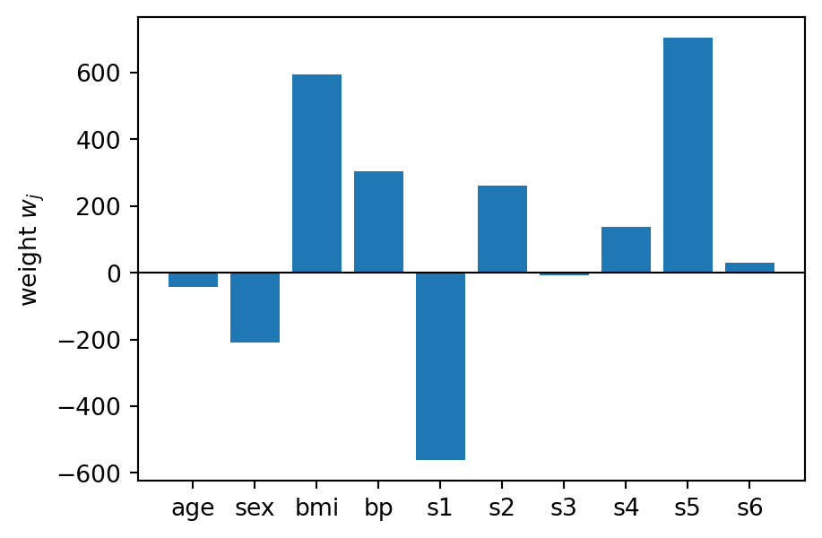
The test \(R^2\) doubles compared with BMI alone. Since the features are on the same scale, the weights can be compared: BMI, bp and s5 matter most, as the correlations suggested. But s1 and s2, strongly correlated with each other (\(r \approx 0.9\)), get large weights of opposite sign, and the gap between train and test grows. These are the first signs of multicollinearity and overfitting, the subjects of Lectures 3b and 4a.
Summary: linear regression as (H, L, A)
| Element | Linear regression |
|---|---|
| Model \(H\) | linear functions \(f_\theta(\mathbf{x}) = b + \mathbf{w}^T\mathbf{x}\), \(\boldsymbol{\theta} = [b, \mathbf{w}]\) |
| Strategy \(L\) | mean squared error (or MAE, Huber for robustness to outliers) |
| Algorithm \(A\) | normal equations (closed form) or gradient descent (iterative) |
| scikit-learn | LinearRegression, HuberRegressor, SGDRegressor |
Tip
Keep this table in mind: in Lecture 3a we will fill it in for logistic regression, changing the model and the loss to move from regression to classification. It is also a good way to justify your modelling choices in the coursework reports.
Working with notebooks
We will make extensive use of Jupyter notebooks during the lectures, to execute code together. The corresponding notebooks are available on Moodle and can be executed within Visual Studio Code or through any Jupyter engine where the relevant modules are available. Jupyter is an interactive computing environment that combines code execution, text, mathematics, plots, and rich media in a single document, which makes it ideal for data exploration, visualisation, and prototyping machine learning workflows.
For more information head to the Jupyter website.
Tip
The CW1 submission includes a Jupyter notebook: make sure it runs from top to bottom on a fresh kernel before submitting.
Suggested readings and activities
Suggested readings:
The mathematical (and statistical) presentation of regression methods can be found in chapter 13 of Principles of Machine Learning.
Data preprocessing is discussed in more detail in chapter 4 of Machine Learning for Engineers.
Suggested activities:
- Go through the Linear regression chapter of the Google crash course and test your knowledge at the end.
- Repeat the diabetes example using
s5instead of BMI. How do the test MSE and \(R^2\) change? - Plot the residuals of the model with all ten features: do they look better than with BMI alone?
- In the gradient descent example, try \(\eta = 0.01\) and \(\eta = 1.1\). What happens?
Assignment: CW1
Coursework 1 deals with regression and classification. Deadlines, submission instructions and the marking rubric are on Moodle.
The implementation of the entire ML pipeline on a dataset will be presented at the tutorial sessions, with reference to the structure of the coursework (also presented at the tutorials).
The lab sessions with the demonstrators will allow you to explore additional datasets and ask questions.

ENG4200 AI4